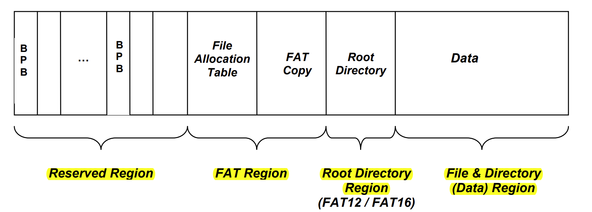

FAT32-spec
Check the FAT32 file system specification. https://jyywiki.cn/OS/manuals/MSFAT-spec.pdf
FAT32 文件系统结构
一个 FAT 文件系统卷由四个基本区域组成，它们按照以下顺序排列在卷上： - 0 - 保留区域 - 1 - FAT 区域 - 2 - 根目录区域（在 FAT32 卷上不存在） - 3 - 文件和目录数据区域

FAT-Structure
Boot Sector & BPB
BPB（BIOS 参数块）位于卷的第一个扇区内的保留区域。这个扇区有时被称为“启动扇区”或“第0扇区”。需要注意的重要事实是，这个扇区就是卷的第一个扇区。 所有FAT卷都必须在启动扇区有一个BPB。
BPB 结构字段
1
2
3
4
5
6
7
8
9
10
11
12
13
14
15
16
17
18
19
20
21
22
23
24
25
26
27
28
29
30
31struct fat32hdr {
u8 BS_jmpBoot[3]; // 跳转指令，用于启动代码
u8 BS_OEMName[8]; // OEM名称
u16 BPB_BytsPerSec; // 每扇区字节数
u8 BPB_SecPerClus; // 每簇扇区数
u16 BPB_RsvdSecCnt; // 保留扇区数
u8 BPB_NumFATs; // FAT表数量
u16 BPB_RootEntCnt; // 根目录项的总数（FAT32中此值为0）
u16 BPB_TotSec16; // 总扇区数（16位），如果为0，则使用BPB_TotSec32
u8 BPB_Media; // 媒体类型
u16 BPB_FATSz16; // FAT大小（16位），FAT32中此值为0
u16 BPB_SecPerTrk; // 每磁道扇区数
u16 BPB_NumHeads; // 磁头数
u32 BPB_HiddSec; // 隐藏扇区数
u32 BPB_TotSec32; // 总扇区数（32位）
u32 BPB_FATSz32; // 每个FAT的扇区数（FAT32）
u16 BPB_ExtFlags; // 扩展标志
u16 BPB_FSVer; // 文件系统版本
u32 BPB_RootClus; // 根目录簇号
u16 BPB_FSInfo; // FSInfo扇区号
u16 BPB_BkBootSec; // 备份引导扇区位置
u8 BPB_Reserved[12]; // 保留供将来使用
u8 BS_DrvNum; // 驱动器编号
u8 BS_Reserved1; // 保留
u8 BS_BootSig; // 扩展引导标志
u32 BS_VolID; // 卷序列号
u8 BS_VolLab[11]; // 卷标
u8 BS_FilSysType[8]; // 文件系统类型
u8 __padding_1[420]; // 填充至510字节
u16 Signature_word; // 扇区签名（0x55AA）
} __attribute__((packed)); // 确保编译器不会改变对齐
FAT32-spec
https://github.com/Cookiecoolkid/Cookiecoolkid.github.io/2024/07/01/FAT32-spec/